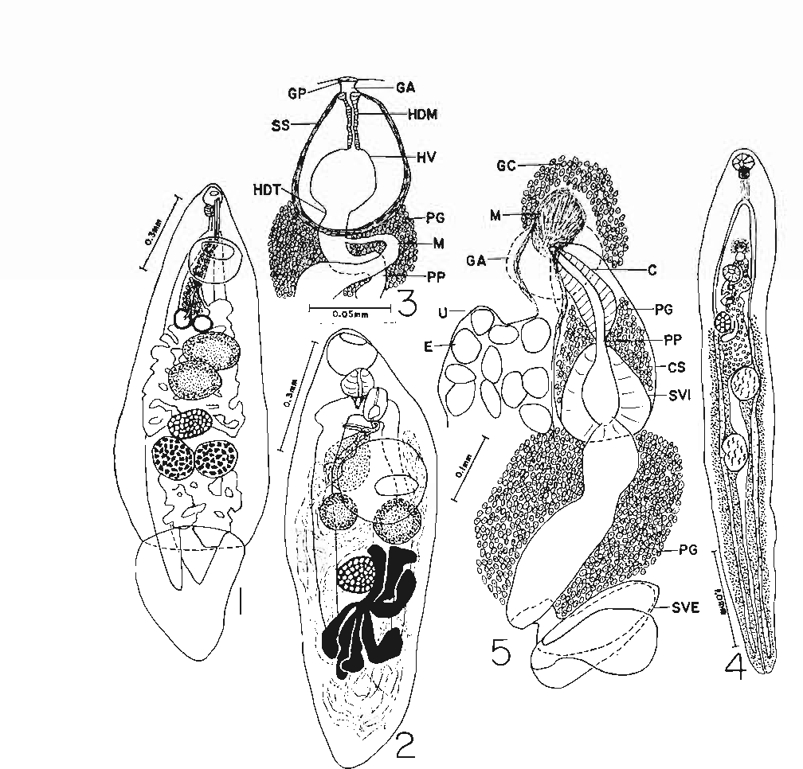
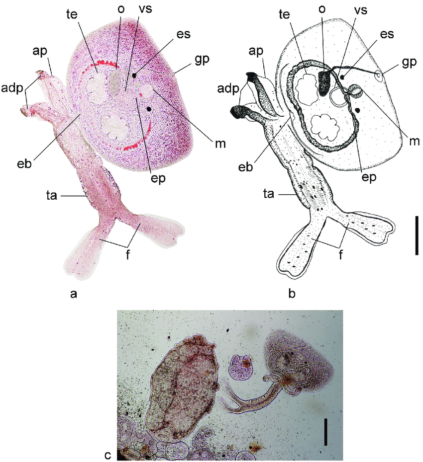

Carmen Velasquez, Ph.D.
Year Conferred: 1983
Field of Specialization: Parasitology
Status: Deceased
In her long scientific career, Velasquez discovered 32 new species and one new genus of digenetic trematodes in 13 families of Philippine fish. Her research helped the scientific community understand the relationships between fish parasitology, conservation, aquaculture, and public health.
Educational Background:
- University of the Philippines, B.S. Zoology, 1934
- University of Michigan, MS Zoology, 1937
- University of the Philippines, Ph.D. Parasitology, 1957
Academical Researches
Velasquez C. C. & National Research Council of the Philippines. (1975). Digenetic trematodes of philippine fishes. Published for the National Research Council of the Philippines by the University of the Philippines Press.
Velasquez C. C. Eduardo S. L. & National Academy of Science and Technology (Philippines). (1994). Index catalogue of parasites of philippine vertebrates. National Academy of Science and Technology.
Velasquez C. C. (1976). Some fish parasites as constraints of human welfare in the philippines. University of the Philippines Press.
Velasquez C. C. (1978). Some parasitic helminths as environmental hazards in the philippines. University of the Philippines Press.
Velasquez C. C. & National Research Council of the Philippines. (1983). Philippine science encyclopedia : biological sciences. National Research Council of the Philippines.
Velasquez C. C. & University of the Philippines Press. (1972). Mollusks of parasitological significance in the philippines. University of the Philippines Press.
Velasquez C. C. & Asis C. V. (1993). Modern biology : with biology investigation (Rev.). National Book Store.
In the span of her academic career, she discovered thirty-two new species and one new genus of digenetic trenatodes from Philippine food fishes, 2 from birds and 5 from mammals represented as follows:
- Family Bucephalidae - 12 new species - 1 new species from the U.S. National Museum Helminthological collection which was misidentified by Linton.
- Family Transversotre atidae - 1 new species - only world representative with a complete record.Abbreviated life cycle elucidated.
- Family Prosogonotrematidae - 1 new species
- Family Monodhelminthidae - 1 new species
- Family Cryptogonimidae - 4 new species and 1 new genus
- Family Hemiuridae - 2 new species
- Family Echinostomatidae - 2 new species
- Family Plagiorchidae - 1 new species
- Family Notocotylidae - 1 new species
- Family Philopthalmidae 1 new species
- Family Heterophyidoe - 1 new species
- Family Didymozoiclae - 1 species
- Family Microphallidae - 1 new species
- Monogenea - 1 new species
Renowned Works:
Sample Digenetic Trematodes of a Philippine Fish
- Thirty-two new species and one new genus of digenetic trematodes from Philippine food fishes, two from birds and five from mammals; nine life cycles of trematodes of the family Transversotrematidae, Echinostromatidae, Notocotylidae (2), Plagiorchidae, Heterophyidae (2), Microphallidae and Philophtalmidae. In addition, two new species of nematodes from Philippine fishes and a new species of Capillaria from the intestine of man. Also, a new species of parasitic copepod in Glossogobius giurus (Goby) 
Sample Digenetic Trematodes of a Philippine Bird